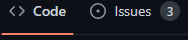
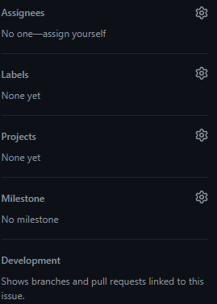
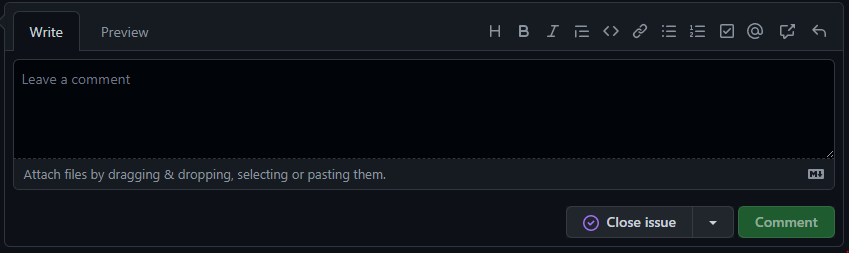

<hr> <h1 align = "center"> <img src = "https://camo.githubusercontent.com/ce7d984a9a92f8f610e17795df90bad1fc2ac27f42078bd26db5f67395fbf62a/68747470733a2f2f637369732e706163652e6564752f7e736368617266662f706163656d6f62696c656c61622f696d616765732f6769746875622e6a7067" width = "40px"> GITHUB ISSUES <img src = "https://camo.githubusercontent.com/ce7d984a9a92f8f610e17795df90bad1fc2ac27f42078bd26db5f67395fbf62a/68747470733a2f2f637369732e706163652e6564752f7e736368617266662f706163656d6f62696c656c61622f696d616765732f6769746875622e6a7067" width = "40px"> </h1> <hr> <h2> <img src = "https://c.tenor.com/gE6M1FsEmFMAAAAi/alert.gif" width = "30px"> What's that? <img src = "https://c.tenor.com/gE6M1FsEmFMAAAAi/alert.gif" width = "30px"> </h2> <p> When we talk about issues we usually relate them with problems, but in this context they don't necessarily mean that. Github issues are a way of communication that allows a collaborator of a project to notify others about aspects that affect the project at different levels (maybe critical, maybe not). </p> <p align = "center"> <img src = "https://c.tenor.com/2kAO6lk_cbIAAAAd/pointing-leonardo-di-caprio.gif" width = "250px"> </p> --- <h2> <img src = "https://media.giphy.com/media/l49JLwNcYKjxHJThu/giphy.gif" width = "40px"> Why they are not problems at all? <img src = "https://media.giphy.com/media/l49JLwNcYKjxHJThu/giphy.gif" width = "40px"> </h2> <p> When a Github Issue is generated, it can notify about different kind of things, maybe they'll be about the documentation, enhancement purposes, help requirement, bugs, etc... There are many posibilities, and that's why they can be assigned labels to be easily identified. </p> <p align = "center"> <img src = "https://media.giphy.com/media/A2bEoe7P9Q79CIx8EX/giphy.gif" width = "250px"> </p> --- <h2> <img src = "https://wiki.multitheftauto.com/images/a/ac/Coder.gif" width = "60px"> How can I create one? <img src = "https://wiki.multitheftauto.com/images/a/ac/Coder.gif" width = "60px"> </h2> <p> Nothing could be easier: <ul> <li> Open your github account <br> <br> <p align = "center"> <img src = "https://c.tenor.com/WuOwfnsLcfYAAAAC/star-wars-obi-wan-kenobi.gif" width = "250px"> </p> </li> <li> Enter the repository <br> <br> <p align = "center"> <img src = "https://c.tenor.com/yMRR0PVI9hMAAAAC/the-shining-heres-johnny.gif" width = "250px"> </p> </li> --- <li> Click on "Issues" <br> <br> <p align = "center">  <br> </p> </li> <li> Click on "New issue" <br> <br> <p align = "center"> <br> </p> </li> <li> Assign the issue a title and describe it (you can use Markdown for this :D) <br> <br> <p align = "center"> <img src = "https://c.tenor.com/IUFa8k1XckwAAAAC/writethatdown.gif" width = "200px"> <br> </p> </li> --- <li> If you have the authority, you'll be able to assign a person to solve that issue, categorize it with labels, relate it to a project chart, establish milestones, and link it to other branches or pullrequests.<br> <br> <p align = "center">  <br> </p> </li> --- </ul> </p> <p> That's it! Now, if you want to close an issue because it has been solved, just select it, leave a comment and click on "Close issue". </p> <p align = "center">  </p> And... <p align = "center"> <img src = "https://c.tenor.com/We7mk-maa5kAAAAd/terminator-hasta-la-vista-baby.gif" width = "350px"> </p> --- <h2> <img src = "https://pa1.narvii.com/7172/fcdcf302c934a085b514a58780223b1533a9e3b7r1-400-400_hq.gif" width = "60px"> In conclusion <img src = "https://pa1.narvii.com/7172/fcdcf302c934a085b514a58780223b1533a9e3b7r1-400-400_hq.gif" width = "60px"> </h2> <p> Github Issues can be an effective way of communication to notify aspects of a project that could make the user experience more satisfying. Despite they are very intuitive, it's important to manage their content and features in order to make them understandable for other collaborators. </p> <h2> <img src = "https://kostadindraganov.com/wp-content/uploads/2020/12/giphy.gif" width = "40px"> A video just for you <img src = "https://kostadindraganov.com/wp-content/uploads/2020/12/giphy.gif" width = "40px"> </h2> <p> If you skipped all my explanation, just click on Ricardo and be happy. <br> <a href = "https://www.youtube.com/watch?v=WMykv2ZMyEQ"> <p align = "center"> <img src = "https://c.tenor.com/p7R6lxkuVG8AAAAi/ricardo.gif" width = "250px"> </p> </a> </p> --- <h2> <img src = "https://i.pinimg.com/originals/17/a4/0d/17a40d4465ae6c523a6376efcbe58ad4.gif" width = "40px"> References <img src = "https://i.pinimg.com/originals/17/a4/0d/17a40d4465ae6c523a6376efcbe58ad4.gif" width = "40px"> </h2> <p> <ul> <li> Github. (n.d). About issues. Github. <a href = "https://docs.github.com/en/issues/tracking-your-work-with-issues/about-issues"> https://docs.github.com/en/issues/tracking-your-work-with-issues/about-issues </a> </li> <li> The Coding Train. (n.d). 1.4: GitHub Issues - Git and GitHub for Poets [Video]. YouTube. <a href = "https://www.youtube.com/watch?v=WMykv2ZMyEQ"> https://www.youtube.com/watch?v=WMykv2ZMyEQ </a> </li> </ul> </p>